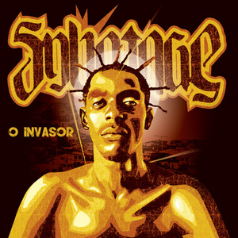

O Invasor (Trilha Sonora)
Filme de Beto Brant
Sabotage mandou ver na trilha sonora do filmaço O Invasor, do Beto Brant, e ainda roubou a cena com uma atuação de respeito. É o cara!
2002
Onde a quebrada ganhou voz e o rap brasileiro ganhou alma
Lançado em 2001, Rap É Compromisso não é só um disco—é um marco. Sabotage despejou a alma da periferia de São Paulo em cada faixa, com batidas pesadas e rimas que cortam como faca. Esse trampo mudou o jogo do rap nacional e até hoje faz a cabeça de quem curte o som verdadeiro.
São 14 faixas que vão de hinos da rua a reflexões profundas. O flow do Sabotage é puro fogo, misturando poesia e atitude. Liga o som e sente a energia de um cara que transformou luta em arte!
Produção: Daniel Ganjaman
Produção: Daniel Ganjaman
Produção: Daniel Ganjaman
Produção: Daniel Ganjaman
Produção: DJ Cia
Produção: DJ Cia
Participação: Helião
Produção: Daniel Ganjaman
Produção: DJ Cia
Produção: Daniel Ganjaman
Produção: DJ Cia
Sabotage não brilhou só sozinho—ele dividiu o palco com os maiores nomes do rap e até do cinema. Confere essas colaborações lendárias!
Filme de Beto Brant
Sabotage mandou ver na trilha sonora do filmaço O Invasor, do Beto Brant, e ainda roubou a cena com uma atuação de respeito. É o cara!
2002
Pavilhão 9
Junto com os rebeldes do Pavilhão 9 no disco Proceder, Sabotage mostrou que domina qualquer batida com suas rimas afiadas.
2000

Rappin' Hood
Sabotage e Rappin' Hood entregaram tudo em Vida de Negro, no álbum Sujeito Homem. Essa faixa é puro sentimento e verdade!
2001
RZO
Na faixa O Trem, Sabotage colou com o RZO, um dos grupos mais pesados do rap paulistano, e mostrou que era da família do hip-hop.
2002